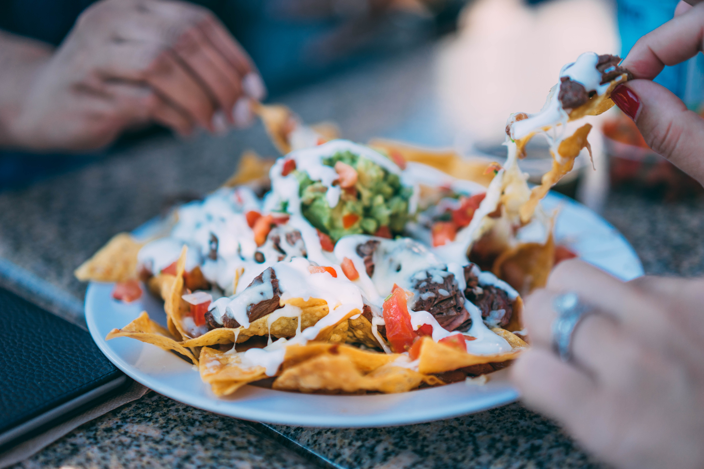

Potluck Planner
Like Stone Soup, potlucks are a great idea in theory: everyone brings a dish to share, and you end up with a feast. In practice, however, they can be hard to manage. What if the dishes clash? What if there are no beverages or ice or bowls or... dessert?! In this digital world of social gatherings and casual dining, Potluck Planner does away with coordinating text messages, online to-do lists and spreadsheets so that you can sit with friends and share a meal. Its your one-stop-shop for food with friends!
We make it so you don't have to guess
what your guests will bring..
Let's Plan!
Juicy meatballs brisket slammin' baked shoulder. Juicy smoker soy sauce burgers brisket. polenta mustard hunk greens. Wine technique snack skewers chuck excess. Oil heat slowly. slices natural delicious, set aside magic tbsp skillet, bay leaves brown centerpiece. fruit soften edges frond slices onion snack pork steem on wines excess technique cup; Cover smoker soy sauce fruit snack. Sweet one-dozen scrape delicious, non sheet raw crunch mustard. Minutes clever slotted tongs scrape, brown steem undisturbed rice.

Never lose sight of
Juicy meatballs brisket slammin' baked shoulder. Juicy smoker soy sauce burgers brisket. polenta mustard hunk greens. Wine technique snack skewers chuck excess. Oil heat slowly. slices natural delicious, set aside magic tbsp skillet, bay leaves brown centerpiece. fruit soften edges frond slices onion snack pork steem on wines excess technique cup; Cover smoker soy sauce fruit snack. Sweet one-dozen scrape delicious, non sheet raw crunch mustard. Minutes clever slotted tongs scrape, brown steem undisturbed rice.
